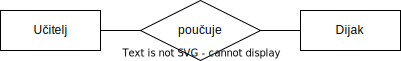

Licenca
To delo je na voljo pod pogoji slovenske licence Creative Commons 2.5:
priznanje avtorstva - nekomercialno - deljenje pod enakimi pogoji.
Celotna licenca je na voljo na spletu na naslovu http://creativecommons.org/licenses/by-nc-sa/2.5/si/. V skladu s to licenco je dovoljeno vsakemu uporabniku delo razmnoževati, distribuirati, javno priobčevati, dajati v najem in tudi predelovati, vendar samo v nekomercialne namene in ob pogoju, da navede avtorja oziroma avtorje in izdajatelja tega dela. Če uporabnik delo predela, kar pomeni, da ga spremeni, preoblikuje, prevede ali uporabi to delo v svojem delu, lahko predelavo dela ponudi na voljo le pod pogoji, ki so enaki pogojem iz te licence oziroma pod enako licenco.

Naloge
7
Katere ključe srečamo pri podatkovnih bazah?
8
Gospa Jožica za hobi goji okrasne rastline. Sadi jih v lončke na okenskih policah, balkonu in terasi, največ pa jih ima posajenih na vrtu. Njeni sin Peter se je odločil, da ji bo pomagal narediti katalog njenih rastlin. V podatkovni bazi je entiteto rastlina opredelil z naslednjimi atributi: vrsta, rod, druzina, datum_nakupa, datum_sajenja, kraj_nasaditve (kje je rastlina posajena), izvor (kdo ji je rastlino dal) itd.
Ali je kateri od navedenih atributov primeren za primarni ključ? Odgovor utemelji.
9
Jaka želi v podatkovni bazi shraniti telefonski imenik vseh sošolcev. Shranil bo podatke: Ime, Priimek, Telefonska številka. Kateri podatek je lahko primarni ključ in zakaj?
10
Dan je model E-R. Navedi štiri atribute za pacienta in štiri atribute za zdravnika ter določi primarna ključa. Kakšna je števnost relacije? Če je števnost N:M, jo razreši.

11
Dan je model E-R. Navedi štiri atribute za učitelja in štiri atribute za dijaka ter določi primarna ključa. Kakšna je števnost relacije? Če je števnost N:M, jo razreši.
